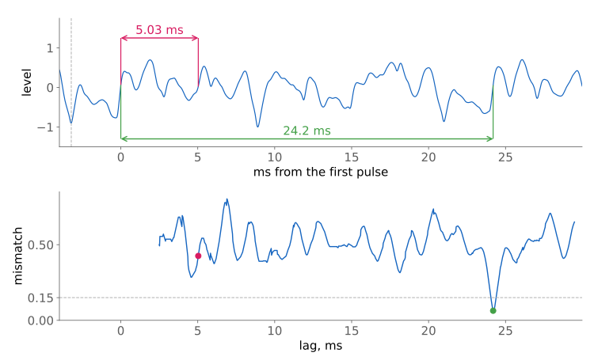

bacf_provisional
A note’s first estimate of its lag, before any lock, for the
BACF follower. The follower gives it out as
provisional(); the pitch shifter restarts a pick’s read on it.
Declaration
namespace cycfi::q::detail
{
class bacf_provisional
{
public:
static constexpr float strong = 0.6f;
static constexpr int fractions = 4;
static constexpr float agree = 0.02f;
static constexpr float repeat = 0.85f;
bacf_provisional(
std::uint32_t min_lag
, std::uint32_t max_lag
, float long_hint
);
template <typename Pulses>
void estimate(
Pulses const& pulses, bacf_slice const& slice
);
template <typename Periodicity>
void vet(
bacf_slice const& slice, std::uint32_t now
, Periodicity const& periodicity
);
bool estimated() const;
bool pending() const;
float value() const;
void drop();
void reset();
};
}The estimate
The follower calls estimate(pulses, slice) at each edge, leading and
trailing, while unlocked, with at least two pulses and no estimate yet. A
lock ends the attempts: if it comes first, the slice has no estimate. The
estimate is the leading-edge spacing of one pair of pulses, in whole
samples:
-
The anchor: the newest completed pulse. If it began before the drop (
!slice.after(lead)), or is not strong (peak < strong * slice.peak(),strong60%; at a trailing edge the slice’s peak already includes the anchor), there is no estimate at this edge; the next edge tries again with the pulse newest then. -
The search: the pulses before it, newest first. A span under
min_lagis passed over, and so is a pulse that is not similar. The search stops at the first similar pulse, whose span is the estimate, at a pulse that began before the drop, or at a span pastmax_lag. The first similar pulse is taken, not the best; no bits are scored.
bacf_period_detector::predict_period(), the period detector’s early
prediction, pairs pulses the same way with the same 60%, with two
differences: it takes the newest strong pulse in its frame as the anchor,
rather than waiting for the newest pulse to be strong, and its search is
bounded only by the frame (no drop, no lag range;
bacf_pitch_detector::predict_frequency() then rejects a period under the
minimum).
Two pulses are similar (similar(), in bacf_bitstream.hpp) when both
hold:
-
Height: their peaks are within 40% of the larger. The test in
zero_crossing_collector, whichpredict_period()uses, allows 20%; the follower widened it to 40% for an earlier estimate (take 58’s pick path). -
Width: their widths are within 15% (
zero_crossing_collector::pulse_width_diff). A pulse’s width is the samples from its leading edge to the first sample under 30% of its peak so far, or to its trailing edge if it never falls that low: how soon the pulse falls from its peak, not how long the signal stays above zero.
On a single note a pair forms about two periods in, before the lock: on the Low E test note, 15 ms after the pick against 40 ms. Without a long hint the estimate stands on this pulse test alone; its bits are not scored.
At the re-strum of the next section, the estimate was made at the trailing edge 9.82 ms after the drop, when the slice’s peak was 0.460. The latest pulse and those before it, newest first:
| Lead (sample) | Peak | Width | Against 243881 |
|---|---|---|---|
243881 |
0.354 |
32 |
the latest, strong: 0.354 is over 0.6 x 0.460 = 0.276 |
243791 |
0.156 |
33 |
not similar: heights 0.198 apart, over 40% of 0.354 |
243710 |
0.460 |
50 |
not similar: heights pass (0.106 apart), widths 18 apart, over 15% of 50 |
243659 |
0.270 |
35 |
similar: heights 0.084 apart, widths 3: the estimate, 222 samples (5.03 ms) |
The pair passes only with the wider height test: at 20%, 0.084 is over 0.2 x 0.354 = 0.071, and the two pulses are not similar. Both come from the chord, from different notes in it; a test of height and width cannot tell two notes' pulses apart.
After a long lag
The estimate rests on one pair of like pulses, and two pulses can look alike without the sound repeating at their spacing. After a sound that repeated only at a long lag, a short estimate is suspect: the old lag says the signal had no short repeat, and one pair of pulses is no evidence that the new sound has one. A long last lag comes from a chord (its common period is a multiple of each note’s), a low note, a lock on a multiple of a period, or a sound that hardly repeats at all.
The case that showed it, a strummed guitar recording shifted up 12 semitones: at a re-strum the first pair came from one note of the chord and gave 5.03 ms, a period the chord as a whole does not repeat at. The shifter spliced the chord every 5 ms for 42 ms, until the lock found the chord’s 24.2 ms, and it was heard as a thud.

-
Top: the recording at that re-strum, low-passed at 1 kHz as the follower reads it, its level scaled to the peak in view, timed from the first pulse of the estimate’s pair; the dashed line is the drop. The pair is 5.03 ms apart (pink); the chord repeats at 24.2 ms (green).
-
Bottom: the bits over one lag against the lag before, at each lag, 65 ms after the drop, as the normalized mismatch count of the bitstream autocorrelation: 0 is a perfect match, noise 0.5, a repeat a notch. Same axis as above: each span ends over its lag. At the estimate’s 5.03 ms, 0.43; at the chord’s 24.2 ms, 0.06. The dashed line, 0.15, is the most a repeat may mismatch (
repeat, 85% matched). -
The two pulses look alike, but the signal does not repeat at their spacing.
The check applies when the slice’s hint, the last good lag before the drop,
is over long_hint, 13 ms in the follower (0.013 * sps samples). 13 ms is above a guitar’s low E
period (12.1 ms) and below a chord’s common period (24.3 ms for an E chord).
After a shorter hint, or none, the estimate stands at once: checking every
estimate cost single notes 1.3 ms of latency at +12 semitones, for estimates
that were already right.
The hint only stands in for "the sound before had no short repeat". It can be long after a single note: in the onset corpus, 4 of 161 picks had a hint over 13 ms, all after single notes (a low B’s 16.2 ms, a low E locked at twice its period). There the check costs a right estimate the wait of one lag. And it can be short in a chord, if the lock held one note’s lag; then the check does not run.
After a long hint the estimate stands when either holds:
-
It agrees with the hint. For some
kfrom 1 tofractions(4),|estimate * k / hint - 1| ⇐ agree(2%). A long lag is often a whole multiple of a shorter period in the same sound (a chord’s common period of its notes' periods, a doubled lock of the note’s own), so an estimate that divides it is consistent with the sound before, and passes at once. The 5.03 ms above does not: 24.2 / 5.03 is 4.81. -
It repeats. Once one lag of the slice can be scored (
slice.ready(estimate, now)), the bits over that lag match the lag before atrepeat(85%) or more:periodicity(estimate), which the follower computes as1 - mismatch(estimate, w) / wwithw = slice.one_lag(estimate), the latest bits (seebacf_bitstream). A score under 85% does not end it: the vet runs again at every sample with the newest bits, until the estimate stands or the next drop. A single note does. One note of a chord does not: in the recording above, the chord’s bitstream at a half to a quarter of its period matches 50 to 70%, noise 50%. The mismatch is read at the estimate’s lag only, not at the bottom of a notch near it: in the figure, the notch nearest 5.03 ms bottoms at 0.29 at 4.6 ms, 20 samples earlier, still over 0.15. One lag is the earliest a repeat can be scored after the drop; the full window would wait until 11.6 ms of the slice can be scored, the latency the estimate is there to save.
vet() runs at the end of each sample, after the sample’s bit is stored,
while an estimate is pending(); a hint at or under long_hint (0
included) lets it stand at the first vet. Until it stands value() is 0,
and the shifter’s restart waits for the lock or its latency cap; once it
stands it stays, until drop() or reset() clears it.
Tests
test/pitch/detail/bacf_provisional.cpp: the first strong pair after the
drop, with earlier pulses ignored; only pulses after the drop pairing; a weak
latest pulse giving none; lags out of range; after a long hint, an estimate
that agrees standing at once (3 and 4 times it); one that does not, waiting
for one lag, then standing only once it repeats; drop() and reset().